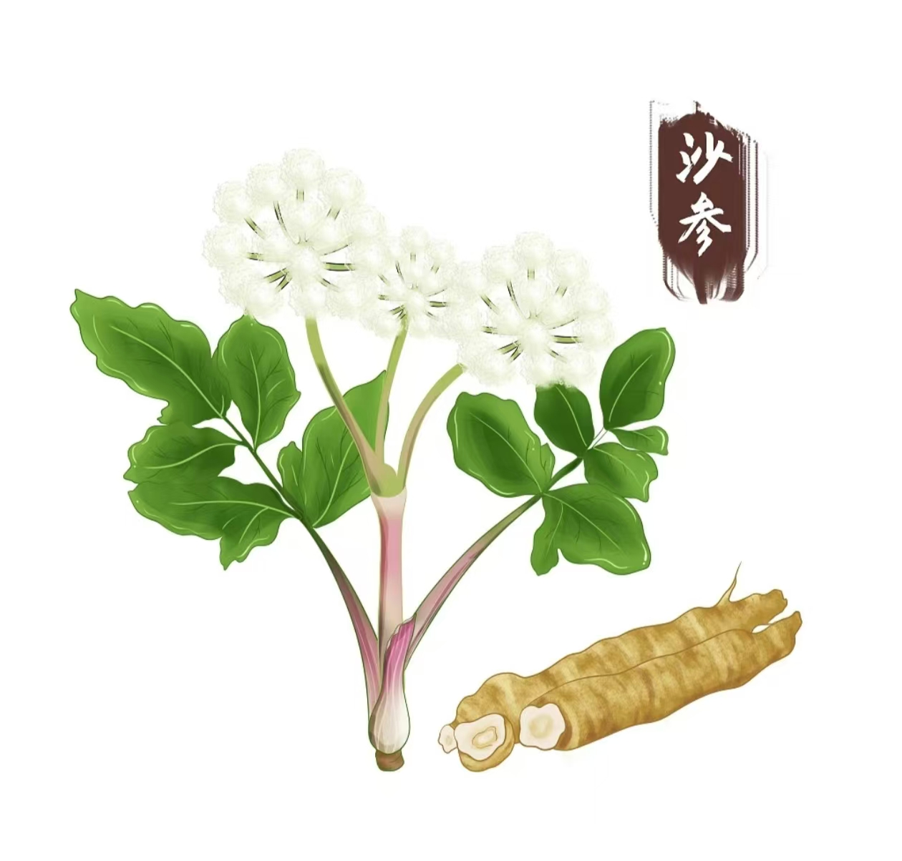

茯苓简介
茯苓，又称"云苓"，是多孔菌科真菌茯苓的干燥菌核。味甘、淡，性平，归心、肺、脾、肾经，具有利水渗湿、健脾和胃、宁心安神之功效，是中医临床常用的药食同源之品。
日常食疗搭配
茯苓可与多种食材搭配，制作成各种养生食品，既能发挥其药效，又能增加食品的营养价值。
茯苓粥
取茯苓粉30克，粳米100克，加水适量煮粥，具有健脾益胃、利水消肿之效，适合脾虚泄泻、水肿者食用。
茯苓薏米茶
茯苓15克、薏米30克，加水煎煮30分钟，代茶饮用，具有健脾祛湿之效，适合湿气重、身体困重者。
注意事项
茯苓性平，适合大多数人群长期服用，但肾虚、滑精者应慎用。日常保健用量一般为10-15克，过量服用可能出现轻微不适。
建议在中医师指导下使用，根据个人体质选择适合的搭配方式和用量。